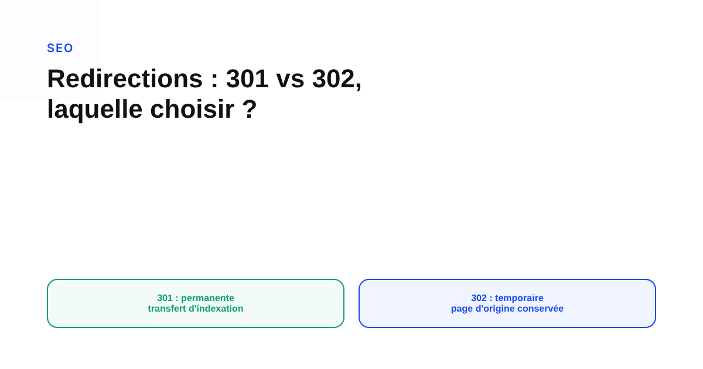
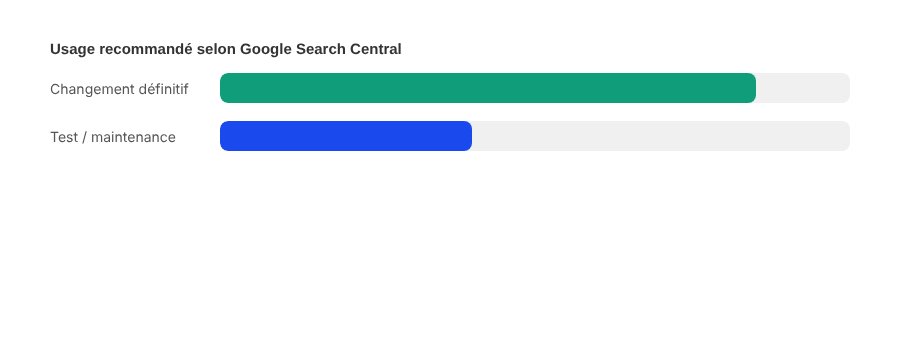

Redirections 301 vs 302 : laquelle choisir, et l'erreur qui fait perdre le jus SEO
« Est-ce qu'un 302 perd du jus SEO par rapport à un 301 ? » C'est une des questions techniques les plus posées en référencement, et la réponse officielle de Google est plus nuancée que ce qu'en disent la plupart des articles qui circulent.

« 301 ou 302 ? » revient dans presque tous les audits techniques, dès qu'une page change d'adresse. La réponse courte — permanent, utilisez un 301 ; temporaire, utilisez un 302 — est correcte, mais elle cache une question plus disputée : ce que chaque code fait réellement à l'indexation, et s'il existe une perte de valeur de lien entre les deux. Voici d'abord ce qui différencie concrètement les deux codes, avant de démêler la partie confirmée de la partie qui ne l'est pas.
- 301 — permanente
- L'URL cible devient l'URL canonique : Google bascule l'indexation vers la destination.
- 302 — temporaire
- Google conserve la page source dans les résultats de recherche, sans basculer vers la destination.
C'est la distinction la plus solide et la plus officielle entre les deux codes : elle ne porte pas sur la popularité d'une page, mais sur laquelle des deux URLs reste indexée. La documentation de Google Search Central classe d'ailleurs les redirections en deux familles sur cette base : permanentes (301 et 308) et temporaires (302, 303, 307) — chaque famille partage le même traitement d'indexation que son représentant principal.

PageRank et « jus SEO » : la seule partie que Google tranche clairement
Sur le transfert de valeur de lien (le fameux « jus SEO »), Google a fait une déclaration publique assez nette dans sa documentation sur le changement d'adresse d'un site : un 301, ou une autre redirection permanente, ne provoque pas de perte de PageRank. Cette phrase répond directement à la crainte la plus commune. Ce qui reste flou, en revanche, c'est la mécanique précise pour un 302 : la documentation sur les redirections elle-même ne détaille pas, noir sur blanc, de règle de transfert de valeur de lien différenciée entre les deux codes. Des commentaires spécialisés avancent des lectures contraires de ce silence — certains concluent qu'un 302 transfère la valeur presque comme un 301, d'autres qu'aucune garantie officielle n'existe sur ce point précis. En l'absence d'un texte Google qui tranche explicitement cette sous-question, la position la plus honnête est de ne pas trancher à sa place.
Le piège qui revient le plus souvent en migration ou en refonte : poser un 302 par réflexe (souvent le code par défaut d'un outil ou d'un CMS) pour un changement qui, dans les faits, est définitif, puis oublier de le corriger. Google indique qu'une redirection temporaire laissée en place durablement finit par être traitée un peu comme une redirection permanente — mais ce basculement est implicite, non documenté dans un délai précis, et retarde la mise à jour de l'index par rapport à un 301 posé dès le départ. Pendant cette période d'ambiguïté, l'outil d'inspection d'URL de Search Console reste le moyen le plus fiable de vérifier comment Google traite réellement une redirection donnée, plutôt que de se fier uniquement au code HTTP envoyé par le serveur.
Quel code poser, concrètement
- Changement définitif (refonte, fusion de pages, changement de nom de domaine) : un 301 dès le premier jour évite l'ambiguïté d'indexation et la période de flou qui suit un 302 mal utilisé.
- Changement réellement temporaire (page en maintenance, test A/B, bascule momentanée) : un 302 garde le signal clair pour Google — à condition de vérifier qu'il ne reste jamais en place par défaut une fois le changement devenu permanent.
FAQ
Une redirection 302 fait-elle perdre le référencement d'une page ?
Pas directement. Google indique qu'une redirection temporaire conserve la page source dans les résultats de recherche, au lieu de basculer l'indexation vers la destination comme le fait une redirection permanente. Le risque n'est pas une perte de référencement instantanée, mais une ambiguïté prolongée sur quelle URL doit être indexée si le 302 reste en place trop longtemps.
Un 301 fait-il perdre une partie du PageRank transmis à la nouvelle page ?
Google a affirmé publiquement, dans sa documentation sur le changement d'adresse d'un site, qu'un 301 ou une autre redirection permanente ne provoque pas de perte de PageRank. Au-delà de cette déclaration, la documentation officielle sur les redirections elle-même ne détaille pas de mécanique de transfert de valeur de lien, ce qui laisse certains points plus techniques sans réponse officielle précise.
Quelle est l'erreur la plus fréquente sur les redirections en migration de site ?
Laisser une redirection temporaire (302) en place pour un changement qui est en réalité permanent. Google explique traiter une redirection qui persiste durablement un peu comme une redirection permanente, mais ce basculement implicite retarde la mise à jour de l'index par rapport à un 301 posé dès le départ, et prive l'URL Inspection de Search Console d'un signal clair pendant cette période.
Une migration ou une refonte en préparation ?
Pour aller plus loin, voir la page SEO, et l'article Pourquoi Google n'indexe jamais certaines de vos pages.
Pour continuer sur ce sujet.